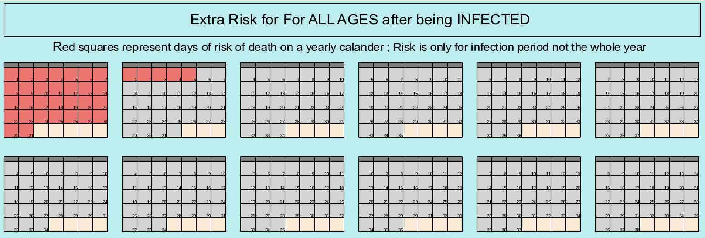
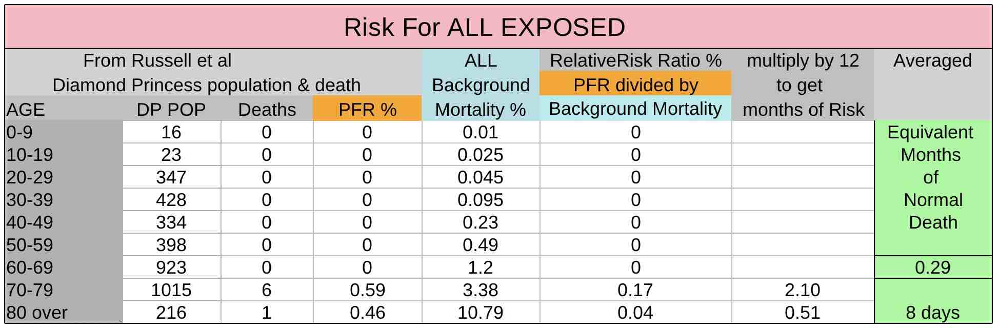

published: 14 March 2021 ...... last updated: 14 March 2021
BEHIND the PRINCESS
Dr. Michael Levitt's Diamond Princess Analysis: Step by Step
In their paper of 16 March 2020, [18] an Imperial College of London (ICL) team, headed by epidemiologist Neil Ferguson, further adjusted the age-banded Infection Fatality Ratios (IFR) calculated by Ferguson and Verity et al [36] and used them in their models to make projections of Covid-19 deaths and hospitalizations for the UK and US, and also the effects various Non Pharmaceutical Interventions (NPI) would have on outcomes.
Believing their projections to be too high, Dr. Michael Levitt of Stanford University used that same ICL Verity IFR to try to replicate their results, applying it to 81% of the populations, since ICL assumed that is the herd immunity threshold of SARS-CoV-2.
The results were higher than the projections, so using published data of fatalities and infections from the Covid outbreak on the Diamond Princess [33] he made his own scaling factors, which represent all the variables and parameters ICL used in their models except the IFR, to match the results first to ICL's population fatality projections, then another to lower ICL's projections to reconcile them with reality.
ICL's model and Dr. Levitt's methods are all ways of using the data from Infection Fatality Ratios to find Population Fatalitiy Ratios (PFR) and the risk to an entire country.
Dr. Levitt’s scaling factors could then be used to make more accurate estimates of deaths that would occur in the US, UK and Wuhan, China (post-evacuation).
The amount of deaths that ICL had predicted that would occur were found to be almost 9 times too high.
Dr. Levitt immediately brought this significant discrepancy between reality and the models to the attention of the authors of the ICL paper, to Sir David Spiegelhalter, an advisor to SAGE of which Ferguson was also a member, in a response to Sir David's Medium article in support of the ICL's predictions that reiterated their incorrect conclusions, and also attempted to circulate his analyses among fellow scientists, but was ignored by all.
Here now is a step by step exposition of Dr. Levitt's work on the Diamond Princess....
Original Document
Circulated March 2020 in attempt to avoid the unnecessary disaster of lockdowns
STEP by STEP
To match ICL's predictions Dr. Levitt experimented with 2 different methods; one was finding a scaling factor, the second was lowering their herd immunity threshold.
The scaling factors could then be used to make more accurate estimates of deaths that would occur in the US, UK and Wuhan, China (post-evacuation)
The first column involving calculations is column F. Since ICL believed 81% of a population must be infected to reach herd immunity, to arrive at the numbers in F, first find 81% of the population by multiplying column E by (0.81). Next the IFR is converted from percents to decimals by dividing by 100 (coral column). They are then multiplied: 81% of the population times the IFR in decimal form.
The results (red box) for the UK and US don't match ICL's estimates, and don't match any of the estimates for any of the other R values for the UK in their paper, being 134,000 over the highest.
So Dr. Levitt found scaling factors, what he calls the “fudge factor”, needed to match ICL's predictions. The fudge factor is what the red box column has to be multiplied by in order to equal Ferguson’s predictions for the US and UK.
The fudge factor (brown column) may represent errors of variables vaguely referred to in the ICL paper that they used in their models, their miscalculation of herd immunity threshold, or both.
Multiplying the red-box column by the fudge factor gives a result close to Ferguson’s prediction (column F, yellow box).
Another way of arriving at Ferguson ICL’s predictions is to not use the fudge factor at all, but rather to change the Herd Immunity Threshold they used, taking 61% of the population instead of 81%, which gives very similar results (yellow box, far right).
For the UK
For the USA
For the Diamond Princess
Here is where we see ICL was over 8 times too high (58 projected deaths divided by the actual 7 deaths)
For Wuhan
The population was reduced to post-lockdown levels [46], then scaled by age to the entire Chinese population to get a Wuhan age-banded population. The rest of the process was as it was for the above locations.
Projections For the UK, US and Wuhan, China
After finding the amount of deaths that the Ferguson's model would predict for the Diamond Princess population, that was used to find a scaling factor to project deaths for the UK, US and Wuhan, China. This scaling factor is the actual number of deaths divided by ICL projected deaths for the Princess.
Equivalent months of death
The amount of deaths occuring during a Covid epidemic can be put in the perspective of deaths that would normally occur in a year by dividing the normal amount of deaths per year by 12 to get normal deaths per month, and then dividing Covid deaths by that, allowing them to be compared as extra months of death or extra months of risk.
Using equivalent months of death is quick way to extrapolate population fatalies that works really well for the Princess since there was 100% exposure.
From the above charts, the approximate 62,000 predicted deaths for the UK from Dr. Levitt's scaling divided by the approximately 50,000 normal deaths per month is 1.24 month's worth, or about 5 weeks of normal deaths in the UK.
Dr. Levitt's scaling of deaths to population is a perfect match with the relative risk method using infection fatlities, showing that it was accurately scaled and so could be safely used a Population Fatality Ratio (PFR).
Sir David Spiegelhalter and Relative Risk
Dr. Levitt brought these errors of calculation and inference to the attention of the public and Sir David Spiegelhalter 22 March 2020 in response to Sir David's Medium article published the day before in support of ICL and Neil Ferguson's work. [25][24] Sir David has advised SAGE, of whom Ferguson was also an advisor, regarding Covid and is Winton Professor of the Public Understanding of Risk in the Statistical Laboratory at the University of Cambridge.
Sir David used normal background mortality rates for the UK [47] and the Verity-ICL IFR to compare the risk of dying from Covid after becoming infected to normal risk of a year of living. He then showed that extra months of risk translates to equivalent amounts of months of death and used that as proof that ICL predictions were correct, that becoming infected with Covid poses an extra year's worth of risk of dying.
Since the Ferguson predictions were far from reality, so too were Sir David’s estimates, which are almost 10 times too high.
Despite Sir David's claims that Dr. Levitt was wrong, its very clear and easy to see that when applied to those on the Diamond Princess who were infected according to PCR testing the results are irrefutable, that there is only around 1 MONTH OF ADDITIONAL RISK to those who become infected.
Comparing the extra risk of being infected with Covid-19 to the risk of living, there's a bit over a month's worth

Comparing the extra risk of being 100% exposed to Covid-19 to the risk of living, its a bit over 1 week's worth of risk to a population

while for ages over 65 its under a month
Fatality by Age Group
A quick way to get projected deaths is to only use over age 65 populations and fatality ratios. Since no deaths occured under age 65, those fatality ratios can be set to zero. Here using the ICL Verity IFR and trying both the 100% exposure we know occured and ICL's Herd Immunity Threshold (HIT) of 81%, the ICL estimates are far too high, almost 10 times too high.
Fatality by Age and Proportion
The same basic estimates can be done proportionally by separating out the >65 age groups, since all deaths occured there, as Dr. Levitt showed on Twitter, taking population of the Diamond Princess over age 65 dividing that by deaths and dividing the population of a country (here the UK) by that scaling factor. Then it can be translated into months of normal deaths as was shown under "Equivalent Months of Death"
Trying again with Simple Proportion LOC :: P65+ :: DEATHS DP :: 1,692 :: 7 UK :: 12 mil :: 52,000 US :: 53 mil :: 220,000 Where LOC is location P65+ is population >65 DP, Diamond Princess w. pop 1692=216+1015+923/2, Russell UK, US =1 month natural death. My silly errors?? https://t.co/1NbEnHpP0vpic.twitter.com/lmWNmjLunr
Looking at ICL's predications quickly, knowing that 19% of the Princess was infected with 7 deaths and then extrapolating that to a % of the population of the UK, one can see that does match ICL's prediction and one might mistakingly think its accurate. For comparison, Ferguson's estimate of 510,000 deaths from Covid, divided by normal deaths per month (50000) is 10.2
However on closer inspection we see that, unlike Dr. Levitt's analysis, that would be a straight infection fatality to population ratio that doesn't consider the populations of age bands or age-related susceptability, like non-uniform age-stratified attack and fatality rates.
Neither would it consider the amount of people who have been exposed, or the presence of any undetected asymptomatics. One would have to assume all asymptomatic infections were acknowledged, which Ferguson knew would not be the case [18] , and accepting the idea that only 19% were infected when that is unlikely.
Also notice that if exposure level on the Princess matches exposure of a population, no matter how low or high the percent is the amount of equivalent death stays the same.
It is only if more exposure would take place in the UK population than what occurs on a cruise ship that the proportion of deaths would be higher in the UK than the Diamond Princess.
What could've gone wrong?:
used a CFR instead of an IFR
didn't properly account for non-uniform attack rates across age bands
ignored asymptomatics
miscalculated Herd Immunity Treshold
Verity and ICL's IFR was really a CFR
Part of the reason ICL-Ferguson's estimates were so wrong may be that they used a CFR as an IFR. Despite accusations leveled at those who opposed lockdowns that they were confusing infections with cases, it was in fact Neil Fersguson and ICL themselves who appear to have confused or conflated the two. An IFR should be lower than a CFR, and as Dr. Levitt knew from his work on China [42] [25 Medium ], the ICL-Verity IFR was far too high. It is actually much closer to case fatality ratio, not an infection fatality ratio.
All infections on the Princess were defined as cases, every postive result was considered a case regardless of whether there were symptoms or contact with other infected people, cases were then just differentiated by being 'symptomatic' or 'asymptomatic'.
The ICL-Verity IFR is a much better match when instead of using all cases, it is applied to just symptomatic cases, which are more likely to be the classical definition of a case and closer to how the Chinese define a case.
The original Verity IFR [36], before it was altered by ICL,was an even closer match to a Case Fatality Ratio when applied to only symptomatics, probably because it is closer to the Chinese CFR from 14 February 2020 [42], almost an exact match.